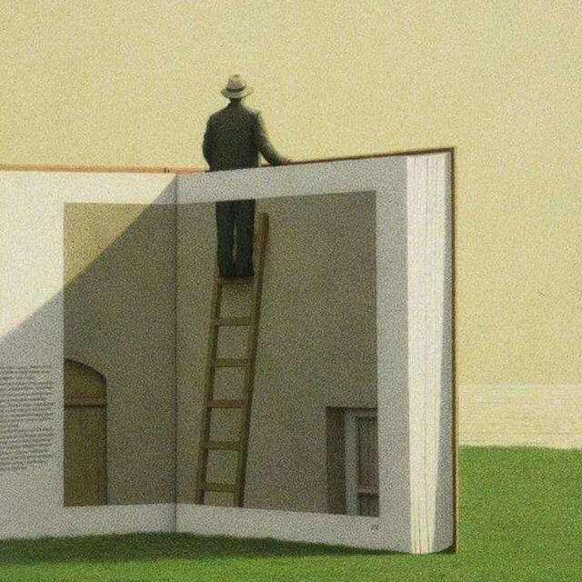
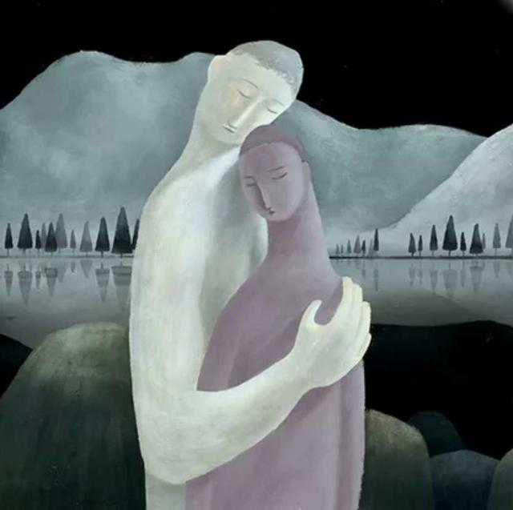
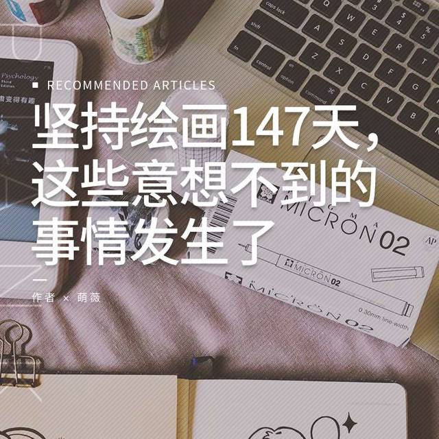
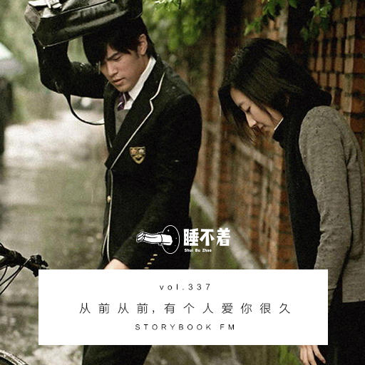
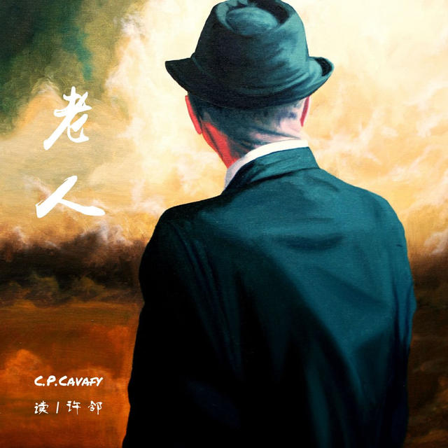
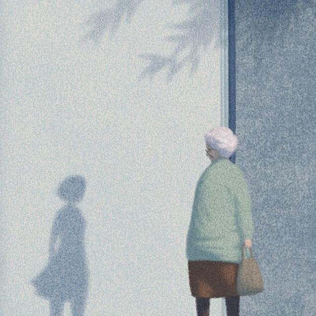
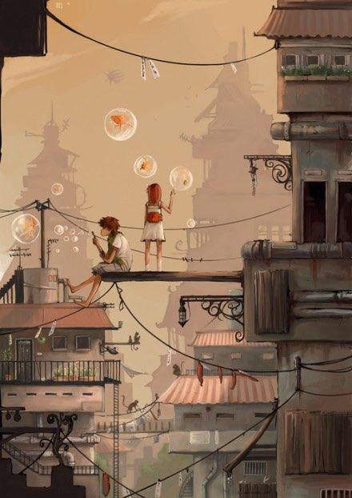
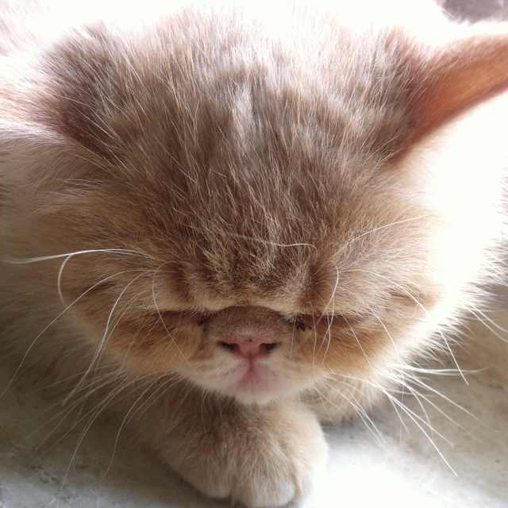

TING
-

从前从前，有个人爱你很久 主播 / 白无常白总 12.9 k次播放 | 评论：24 | 喜欢：227
-

老人|卡瓦菲斯 主播 / 许邻 4.8 k次播放 | 评论：3 | 喜欢：66
-

那份笨拙的爱，是心底最柔软的刺 主播 / 你好南望 2.6 k次播放 | 评论:5 | 喜欢:31
阅读 | Read
-
年华 1。再结婚一次，当下的安稳。只拍一组白纱做纪念。怀孕已三月，也不见胖，涨点年纪是韵味，挽着G先生的手，不输那些年轻男女。到这个年纪再婚，条件不用列举彼此心里都有 VIEW ALL
 8.7 k次阅读 | 评论:59 | 喜欢:129
8.7 k次阅读 | 评论:59 | 喜欢:129

-
偷心 -001-她说：“我要去偷一个东西，你帮我好不好？”她说这句话的时候，没有一点求我办事的语气，反而有些趾高气扬，不可一世的狂傲。我当时正躺在草地上晒太阳，没好气 VIEW ALL
5.1 k次阅读 | 评论:29 | 喜欢:133
-
《寂静苍穹下》：写一本旅行情书，给自己一次救赎。 旅行，对你来说意味着什么？也许是从朝九晚五的日子中逃离，或者是探索这个世界的一种乐趣。对于《寂静苍穹下》的作者李初初来说，旅行是一次疗伤和救赎——走在路上，放空 VIEW ALL
10.2 k次阅读 | 评论:31 | 喜欢:180
人气片客 | Hot Pianker
-
 双笙子 古风歌手双笙
双笙子 古风歌手双笙 -
MrMiss 28届金曲奖最佳演唱組合/爵士人声组合MrMiss
-
Muma 摇滚音乐人 木马
-

片刻小主 片刻官方猫🐱